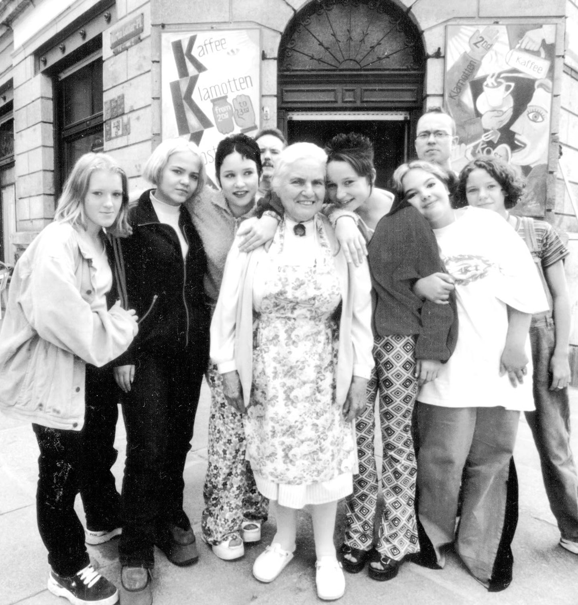
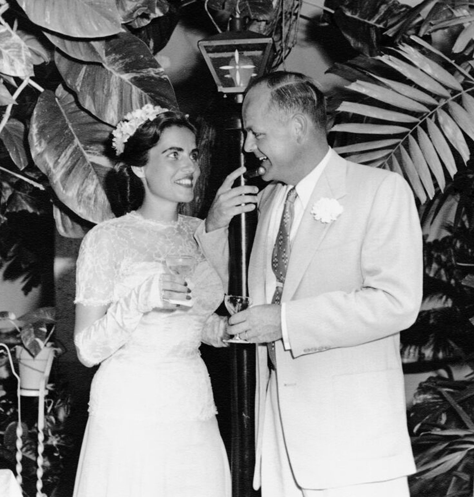
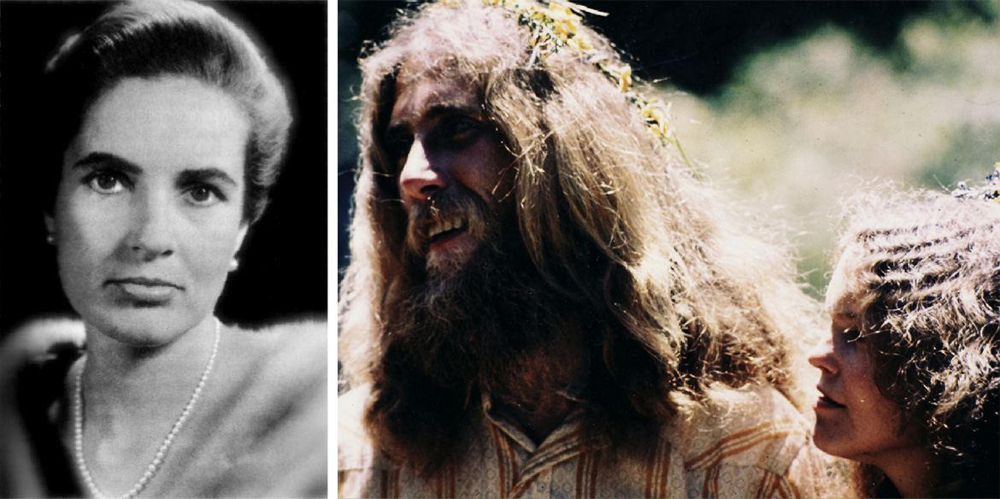
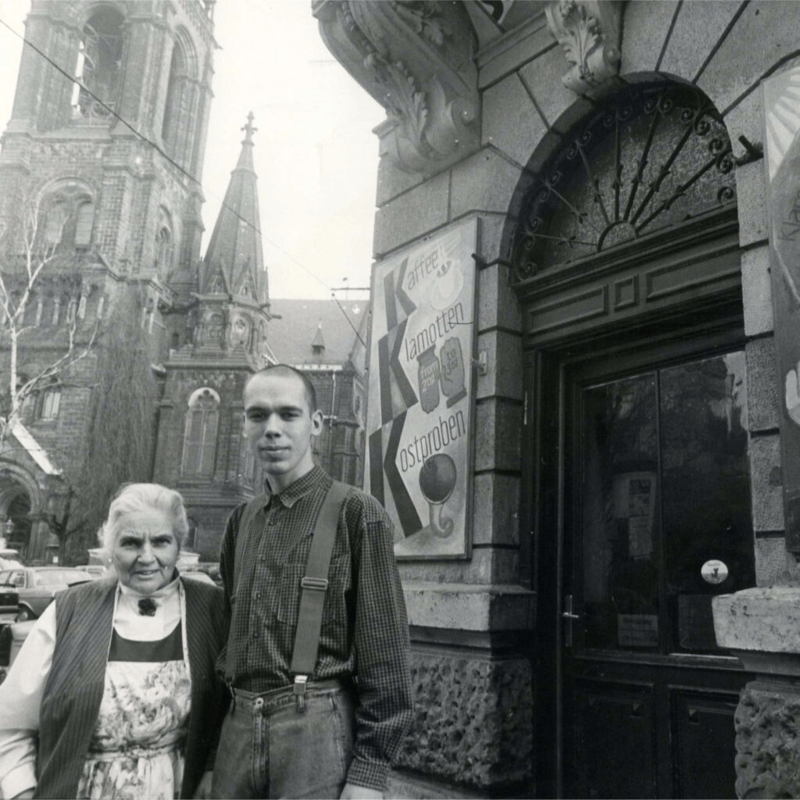
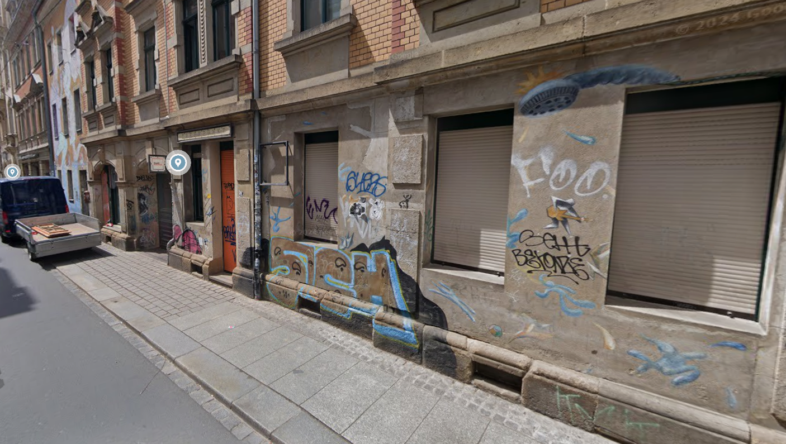
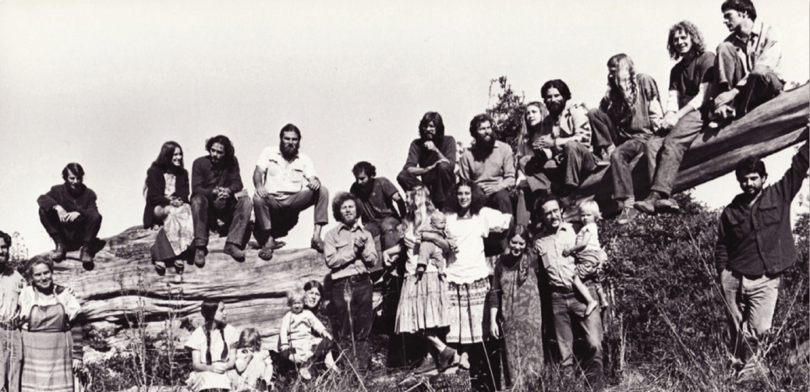
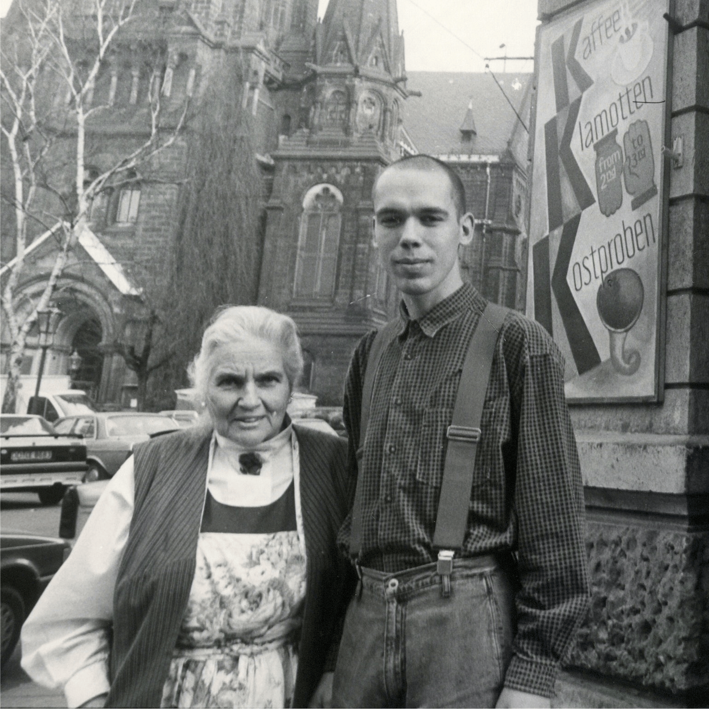
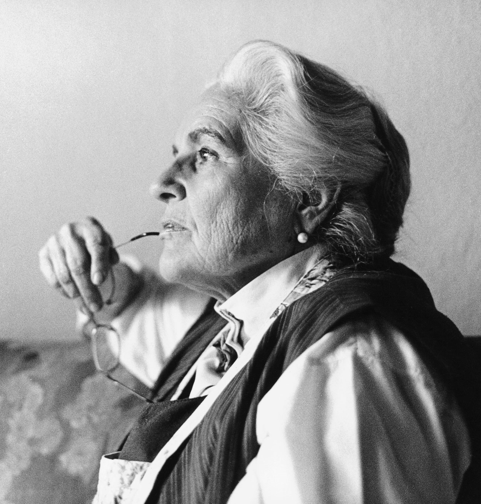

Sabine Ball
Die „Mutter Teresa von Dresden“
„Nur wer abspringt, lernt auch fliegen.“
— Sabine BallWer war Sabine Ball?
Eine außergewöhnliche Lebensgeschichte
Sabine Ball (* 9. September 1925 in Königsberg; † 7. Juli 2009 in Dresden) war eine deutsche Evangelistin, Millionärsgattin und Gründerin des sozial-christlichen Vereins Stoffwechsel e.V.
Ihr Leben glich einer Achterbahnfahrt: Aufgewachsen im Krieg, erlebte sie die Bombennacht in Dresden, wanderte nach Amerika aus und heiratete in die High Society ein. Trotz immensen Reichtums fand sie dort kein Glück.
Nach Stationen in der Hippie-Bewegung kehrte sie im Alter von 67 Jahren nach Dresden zurück – um ihr Leben ganz den Straßenkindern und sozial Benachteiligten zu widmen.

Drei extreme Lebensphasen
Eine Frau – drei völlig verschiedene Leben

💎 Die Millionärin in Miami
1953 heiratete sie den Multimillionär Clifford Ball. Sie verkehrte mit Stars und Politikern – erlebte hinter dem Luxus jedoch tiefe Einsamkeit.

✍ Die Hippie-Mutter in Kalifornien
Nach ihrer Scheidung gründete sie eine Hippie-Kommune in Mendocino und fand durch eine radikale Kehrtwende zum christlichen Glauben.
❤ Die Retterin von Dresden
1993 gründete sie mit fast 68 Jahren das Café Stoffwechsel in der Dresdner Neustadt – für Kinder von der Straße: Essen, Liebe und Hoffnung.
Das Erbe lebt weiter
Sabine Ball verstarb im Jahr 2009, doch ihre Arbeit ist unvergessen. Der Stoffwechsel e.V. ist heute in mehreren Dresdner Stadtteilen aktiv und erreicht wöchentlich Hunderte von Kindern, Jugendlichen und Familien. Für ihr unermüdliches Engagement wurde sie u.a. vom Bundesfamilienministerium ausgezeichnet.
Wie aus einer Ruine ein Zufluchtsort wurde
Das Projekt Stoffwechsel · Dresden · seit 1993

Nach dem Mauerfall zog Sabine Ball 1992 mit einer Schreibmaschine und zwei Koffern nach Dresden. In der von Armut und Aufbruchsstimmung geprägten Dresdner Neustadt sah sie das Elend der Straßenkinder: Jugendliche, die mit Drogen, Gewalt und Perspektivlosigkeit kämpften.
Am 22. Oktober 1993 eröffnete sie mit fast 68 Jahren das „Café Stoffwechsel“ in einer umgebauten Ruine auf der Görlitzer Straße. Ihr Ziel: den Kindern bedingungslose Liebe, ein offenes Ohr und eine warme Mahlzeit schenken.
Ihre Vision: „Liebe verändert.“
Das Konzept „Stoffwechsel“
Drei Kernpfeiler der Arbeit – damals wie heute
🚪 Niedrigschwellige Hilfe
Kein Kind musste Voraussetzungen erfüllen, um das Café zu betreten. Es gab warmes Essen, Kleidung und Sicherheit – völlig kostenlos und ohne Bedingungen.
🤝 Beziehungsarbeit
Sabine Ball und ihre Helfer hörten zu. Sie bauten echtes Vertrauen zu den Jugendlichen auf und halfen bei Behördengängen oder der Wohnungssuche.
✝ Christliche Werte
Der Glaube war Sabine Balls Antrieb. Sie lebte Nächstenliebe praktisch vor, ohne sie den Jugendlichen aufzuzwingen.
Sabine Balls Traum im 21. Jahrhundert
Aus dem kleinen Café von 1993 ist ein großer, anerkannter freier Träger der Jugendhilfe gewachsen. Der Stoffwechsel e.V. betreibt heute in Dresden:
- Kinder- und Jugendhäuser in mehreren Stadtteilen
- Mobile Jugendarbeit auf den Straßen der Stadt
- Familienzentren und Schulsozialarbeit
- Wöchentliche Betreuung von hunderten Kindern und Jugendlichen

Anerkennung für ein Lebenswerk
-
Verdienstorden des Freistaates Sachsen
Verliehen für herausragenden Einsatz für benachteiligte Kinder und Jugendliche in Dresden.
-
Bundesfamilienministerium
Lobte das Projekt Stoffwechsel als wegweisendes Modell für ganz Deutschland.
-
„Die Mutter Teresa von Dresden“
Dieser Ehrentitel der Medien zeigt, wie tief Sabine Ball das Herz der Stadt berührt hat.
Worte, die bewegen
Ein Leben in Bildern
Klicke auf ein Bild zum Vergrößern



Mehr erfahren
Empfehlenswerte Literatur & Medien
Buch-Tipp
„Sabine Ball – Die Mutter Teresa von Dresden“ von Sabine Ball & Roland Werner (Brunnen Verlag). Die packende Biografie – ein absolutes Muss für die Recherche.
Film-Tipp
Verschiedene TV-Dokumentationen (u.a. vom MDR) zeigen ihr Leben und das Café Stoffwechsel eindrücklich. Auf YouTube zu finden.
Stationen einer Verwandlung
Der Lebensfaden von Sabine Ball · 1925 – 2009
Kindheit in Königsberg
Sabine Koritke wird am 9. September in Königsberg (Ostpreußen) geboren und wächst in einer Unternehmerfamilie auf.
Das Inferno von Dresden
Als Kriegsflüchtling erlebt sie im Februar gemeinsam mit ihrem kleinen Bruder die verheerenden Luftangriffe auf Dresden hautnah. Diese traumatische Nacht überlebt sie wie durch ein Wunder.
Aufbruch nach Amerika
Sie verlässt das zerstörte Nachkriegsdeutschland und wandert nach New York aus. Sie schlägt sich anfangs als Kindermdädchen durch.
Aufstieg in die High Society
In Miami heiratet sie Clifford Ball, den Sohn eines Multimillionärs. Sie feiert Partys mit Stars und Politikern – doch hinter dem goldenen Glanz lauert tiefe Einsamkeit.
Die Hippie-Mutter von Mendocino
Sie sucht nach dem Sinn des Lebens, verkauft ihren Besitz und gründet eine Hippie-Kommune in Kalifornien. Später reist sie sogar in ein tibetisches Kloster nach Nepal.
Die radikale Kehrtwende
Mitten in der US-amerikanischen „Jesus-People-Bewegung“ begegnet sie jungen Christen. Sie findet zum tiefen christlichen Glauben – ihre innere Suche ist endlich vorbei.
Rückkehr in die Heimat
Getrieben von Sehnsucht kehrt sie nach Deutschland zurück. Bei einer Zugfahrt durch Ostdeutschland sieht sie die Not der Nachwendezeit und beschließt, mit zwei Koffern nach Dresden zu ziehen.
Geburt des „Stoffwechsel“
Mit fast 68 Jahren gründet sie in einer Dresdner Ruine das „Café Stoffwechsel“. Es wird zur Zuflucht für Drogenabhängige, Straßenkinder und Punks – alle willkommen.
Ein unvergessenes Erbe
Am 7. Juli stirbt Sabine Ball im Alter von 83 Jahren in Dresden. Die Medien nennen sie ehrfurchtsvoll die „Mutter Teresa von Dresden“. Ihr Verein lebt bis heute weiter.
Verwendete Literatur & Berichte
Textquellen (Literaturnachweis)
Ball, Sabine / Werner, Roland: Sabine Ball – Die Mutter Teresa von Dresden. Brunnen Verlag, Gießen. (Hauptquelle für biografische Details.)
Sabine Ball Stiftung (Lovetransforms): Offizielle biografische Online-Chronik und Stiftungsziele. Abgerufen über lovetransforms.de
Stoffwechsel e.V. Dresden: Offizielle Vereinshistorie, Projektdaten und Jahresberichte zur sozialen Arbeit. Abgerufen über stoffwechsel.org
Wikipedia-Autorengemeinschaft: Eintrag zu „Sabine Ball“. Zur Gegenprüfung chronologischer Eckdaten.
Bildnachweise
Die auf dieser Webseite verwendeten historischen Fotografien von Sabine Ball sowie Bildmaterialien der Vereinsarbeit unterliegen dem Urheberrecht. Sie wurden im Rahmen dieses nicht-kommerziellen Bildungsprojekts zu dokumentarischen Zwecken den offiziellen Kanälen des Stoffwechsel e.V. und der Sabine Ball Stiftung entnommen.
Über dieses Projekt
GitHub Pages Schulprojekt
Diese Webseite wurde im Rahmen einer schulischen Gruppenarbeit im Fach Religion erstellt. Sie dient ausschließlich Bildungszwecken und verfolgt keinerlei kommerzielle Interessen.
Hosting: Bereitstellung als statische Webseite über den Dienst GitHub Pages.
Kontakt & Open Source: Der Quellcode dieses Projekts sowie die Möglichkeit zur Kontaktaufnahme bei rechtlichen Fragen befinden sich im dazugehörigen, anonymisierten GitHub-Repository.